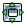

|
|
Materials Explorer Panel |
This panel uses a self-organizing map to cluster structures by sets of properties, and allows you to explore the properties of the structures based on this clustering.
A Canvas license is required (to create the self-organizing map).
To open the Materials Explorer panel, you can:
Choose Scripts → Cheminformatics → Materials Explorer in the main window.
The project entries are clustered with self-organizing maps, using some set of descriptors, such as Glide properties, fingerprints, or other molecular properties. These clusters define groups of molecules that are similar based on the descriptors used. The number of clusters is determined by the size chosen for the map. A 3x3 map, for instance divides the entries into 9 clusters arranged in a 3 by 3 square matrix. You can calculate maps for the same set of descriptors with different sizes.
Once you have calculated a map, any property can be "projected" onto the map. To do this, you pick a property, such as the Glide Docking score, and a statistic of this property, such as the mean, maximum, or minimum. This statistic is calculated for the chosen property for each cluster in the map. These values are then displayed as a color mapping on the map. You can then explore the clusters and the property, such as which entries are in each cell, what the property values are for each cell, what the distance between cells is, and which descriptors are most important to separating the clusters.
Each cell in a property map represents a set of molecules that were grouped together in the self-organizing map. Neighboring cells are closer to each other in property space. Gray cells with an orange X are empty. The color of the cell indicates the value of the property that was mapped onto that cell.
Clicking on a cell in a property map highlights that cell and shows where the members of the cell are distributed in all the maps. By default, the size of the red circle indicates the percentage of the cell's members that are in the highlighted cell. The indicator of percentage can be changed using the Membership indicators option menu. A tooltip on the menu describes how each type of membership indicator behaves.
You can select multiple cells, using control-click. When you have multiple cells selected, the markers can represent the combined set of structures (union, logical OR), the common set of structures (intersection, logical AND), or the structures that are different (only in the first cell selected). You can choose which is represented from the Multiple cell highlight mode option menu.
When you select cells, you can apply various actions to the structures in the selected cells: select them in the Project Table, include them in the Workspace, or mark them as viewed. You can also separately mark individual structures.
Compute self-organizing maps for the entries in the project, or, if opened from Maestro, the selected entries in the project.
Perform project-related actions: changing the receptor, structures, and preparing properties. Opens the Advanced Project Options panel.
Arrange the maps in the map area in a rectangular grid.
Arrange the maps in the map area on the diagonal from the top left, overlapping so that the title is showing for each map.
Add a new projection of a property to a clustering of the structures. Opens the New Property Projection dialog box.
This menu lists the available maps. Selecting an item places the map on top and puts focus on the map.
This toolbar allows you to configure and navigate individual plots.
The toolbar provides tools for manipulation of the plot and for saving an image of the plot. This is a generic toolbar, and some of the actions may not be useful or relevant. The toolbar buttons are described below.
 |
Reset Reset the plot to the original pan and zoom settings. |
 |
Back Display the previous view of the plot in the view history. |
 |
Forward Display the next view of the plot in the view history. |
| Pan/zoom Pan the plot by dragging with the left mouse button, zoom by dragging with the right button. |
|
| Zoom to rectangle Drag out a rectangle on the plot to zoom in to that rectangle. |
|
|  | Configure subplots Configure the margins and spacing of each plot in the panel. |
 |
Save image Save an image of the plot to file. Opens a file selector in which you can browse to a location, select the image format, and name the image. |
 |
Edit axis and curve parameters Make settings for the title, range, labeling, and scale of the axes; the color, style, and width of lines; and the color, style, and size of markers. |
 |
Copy image Copy an image of the plot to the clipboard, so you can paste it into another application. This button is only available in some panels. |
This area displays the maps that were generated.
Each cell in a property map represents a set of molecules that were grouped together in the self-organizing map. Neighboring cells are closer to each other in property space. Gray cells with an orange X are empty. The color of the cell indicates the value of the property that was mapped onto that cell.
Show membership indicators in the cells when a cell is selected.
Show membership markers for the structures that are selected in the Project Table (instead of the selected cells).
This section provides options for various actions on the structures in the highlighted cells.
Select the structures that are in highlighted cells in the Project Table, and deselect all other project entries.
Select an option for the inclusion of structures in the Workspace. The option applies to the subsequente selection of structures: it does not change the inclusion of structures immediately.
These options allow you to automatically mark structures as "viewed". The condition for whether a structure is "viewed " can be one of When cell is highlighted (all structures in the highlighted cell are marked), or When included in WS (structures that are included in the Workspace are considered "viewed"). A boolean property is created in the project (Structure Viewed) to record the viewing of the structures, and the structures are marked as viewed in the Structures in currently highlighted cells list.
Choose what the markers represent when multiple cells are highlighted:
List of the titles of the structures that are in the currently highlighted cells.
Choose what is displayed in the tool tip when the pointer is over a map cell. The choices are Cell info, which displays the cell index, the property value, cell membership, and number of members that are marked or viewed; and Distance info, which displays a 3x3 grid with cell properties in the center, and information on the distance and the largest three differences between the cell and its neighbors.
Choose a representation that indicates the percentage of the members of a cell that are in the selected cell:
Mark the structures that are selected in the Structures in currently highlighted cells list. A boolean property is added to the project (Structure Marked) to record which structures were marked, and the marked structures are indicated in the list. You can also use the X key to mark the selected structures.
Show the 2D structures of the highlighted structures in a separate window. The cells in this window contain the 2D structure and the value of the mapped property for the structure. The structures that are selected in the Structures in currently highlighted cells list are marked in yellow. The structure selection can be changed in this window, and the change is reflected in the list.
|